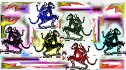

12 MONKEYS 
Director: Terry Gilliam
Starring: Bruce Willis, Madeleine Stowe, Brad Pitt,
Christopher Plummer, Frank Gorshin, David Morse, Jon Seda
Screenplay: David Webb Peoples and Janet Peoples
Inspired by the film "La Jetee" by Chris Marker
Producer: Charles Roven
Music: Paul Buckmaster
Cinematographer: Roger Pratt
Costume Design: Julie Weiss
Universal/Rated R for language, and violence
Movie Review
by Collette Sweeney
How much more self determined are we beyond the extent that we can control
our environment? We sleep, dream, live, procreate, avoid pain, seek shelter,
eat regulary, and live more or less as most other animals, with the exception
of possessing intelligence. What we claim to share and know about each other
as indisputable is a short list of the stuff required to survive and prosper.
To get from here to there. Generally we choose to be alone in these shared
endeavors, tending towards social connections in order to provide for each
other. These shared aspects of what it means to be human are repeated in
most storytelling. The same story gets told many times over. Movies are
condensed and exaggerated, or they enlighten versions of the same story
or themes (love, meaning of existence, greed or want, good and evil, etc.)
meant to provide commentary on our culture, or just blow smoke.
Movie directors like Terry Gilliam, set a whole new stage by asserting their
particular notion of the future. Unlike conventional films, movies in this
genre are exceptional and can be especially creative. But even so, they
often adopt the American Western formula, complete with a showdown shoot-out
between the good, the bad, and the ugly at the OK Corral, or the intergalactic
OK Corral. Ever ask yourself if executive producers hand over a warehouse
key to the director, as soon as the movie contract is signed, a key with
a label that says: neat-o dazzle-o roboto-macho-futurist props and corny
special effects, plus super cool guns? Although films in this genre might
share the same look, each takes a different approach and it's certainly
worth examining why the same ideas are employed by directors and continually
responded to by moviegoers with intrigue and enthusiasm.
The delightful part of movie watching is suspending belief long enough to
be convinced, persuaded, and so on. Not much in this film prevented me from
this kind of surrender despite some of the obvious corny-techno gadgets.
The bar code imbedded in the skull was believable. After all it is an item
found at the supermarket and one of many innocuous automated information
surveillance devices that commands yet another bit of our everyday existence.
The film's evil menace is a virus. The virus is pure, silent, odorless,
deadly, indestructible and a scientifically perfect tool of evil; an invention
that is every bit a fearful and executable product of recent genetic research.
Engineered viruses are the new bombs. But a virus is certainly not as theatrical
and dramatic as the good old graphic guts, gore, and guns flavor the movie
industry prefers. A great deal of the stuff we see in futuristic movies
is at arms length away, it is believable because it plays on existing knowledge
and experience, something not too big a conceptual leap. But whatever techno
devices await us in the distant future, these devices are likely to appear
outside our present frame of reference. A native of Borneo would not know
what to do with an electric shaver. The real techno gadgets of the distant
future might very well appear the same to our current frame of reference.
But Hollywood need not concern itself with this much of a technical leap,
(that warehouse key would be useless.)
Entertaining and compelling as it is to elaborately play out the future
on celluloid, it is often only the dazzling toys and creations (the look
and feel), that directors and producers choose to place their cash bets
on. And not on much else. For Gilliam this doesn't seem so. His characters
appear at first as a round-up of some of the usual suspects found in techno
pop films, i.e., fascist scientists, lone warrior, sensitive struggling
female love interest, and nest of cronies. But Gilliam develops these
characters in a manner that plays on a less common notion about technology.
He seems to be saying that the greatest fear is uncertainty and uselessness.
His main characters are really just onlookers, same as the audience, awed
by the sight and power of technology simultaneously gripped with anxiety.
12 Monkeys has every bit the same kind of look as other films of its kind,
but Gilliam's dispossessed and anxiety-ridden characters are not so typical,
not the usual heroes.
Is Gilliam asking his audience to look at what it might mean to control
the environment to a degree that effectively rules out the need for an entire
segment of people? If labor required for production is completely mechanized,
will this rule out the need for any human input into production? Might
we reach a level of artificial intelkligence that reduces the need for a
human reasoning process? Opinions, management teams, organizational groups
won't be as reliable in solving particular types of problems, etc. Well
then, who gets to sit on the platform? Who's in the pit? Gilliam seems to
be showing moviegoers his idea of who sits on that platform.
12 Monkeys opens with a scene portraying the colonizing of a great
number of people, who for reasons not entirely explained, are expendable,
exploitable, irrelevant, and outcast. They are housed in what appears to
be a penal colony. Willis plays Willis. He plays the lone standard character.
His task is to unravel or undo the past. For this he is looking for a
pardon, liberation from an underworld pit of people who make up a class
which the dominant group exploits in the same manner a scientist might utilize
a lab rat. Willis is drugged, thrown in the loony bin, scrubbed, hunted
down, shot at, disinfected, and at one point, outfitted in a $1.48 plastic
pocket raincoat. He sits in a chair that rises and falls to the tune of
those in control; he learns to learn in the way they tell him. So...Gilliam
might want us to ask just who will those guys be? You know...the ones running
around with sunglasses and sterile lab coats looking bloodless and sitting
on elevated platforms as godlike commandos?
His characters take a few side trips to the past and here we get to see
faith eroding with the loss of the self. Willis meets up with the same
kinda guy in Pitt, a frenzied, hyper, clutter-minded psychopathic rebel
who turns circles inside himself. Both these guys act out an assortment
of anxieties, illusions, and paranoia. Wailing like a babe in a plea to
remain in the present, to exist without finding the ultimate answer, Willis'
character seems to be saying he prefers not to know the future. Can technology
be an ugly wheel in motion?
12 Monkeys is an exception to most films of its kind, and so of
course, is Gilliam as a director. His past work raises our expectations,
pushing into view what we might not be comfortable recognizing. In effect,
he asks the movie-going crowd to "entertain" ideas of our future
we might do best to take as a warning.